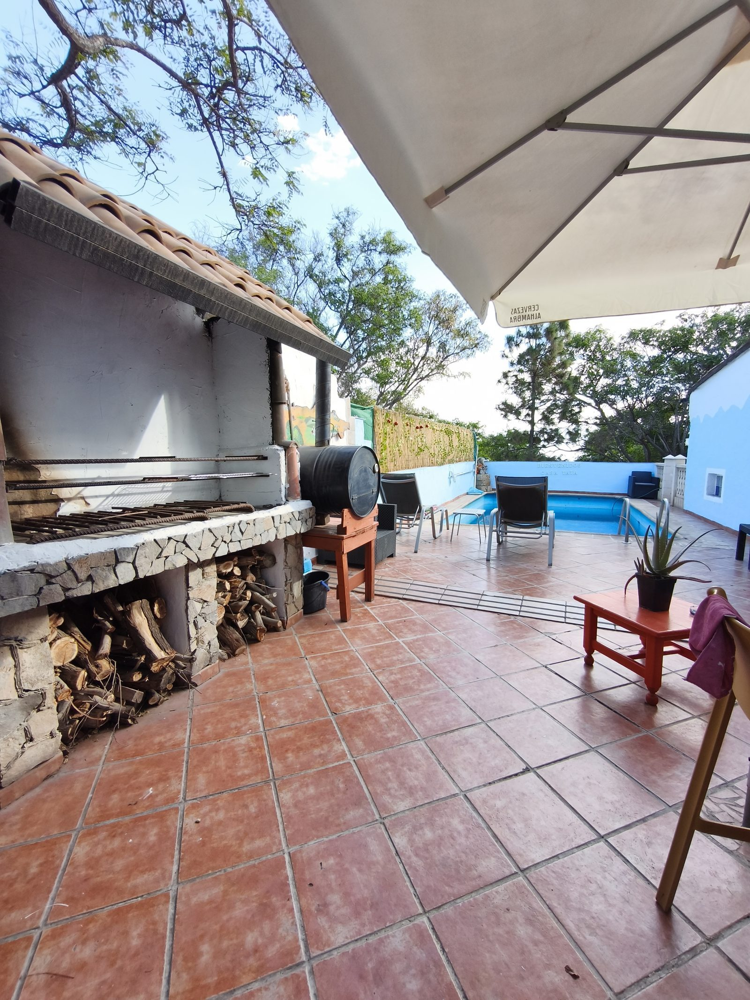
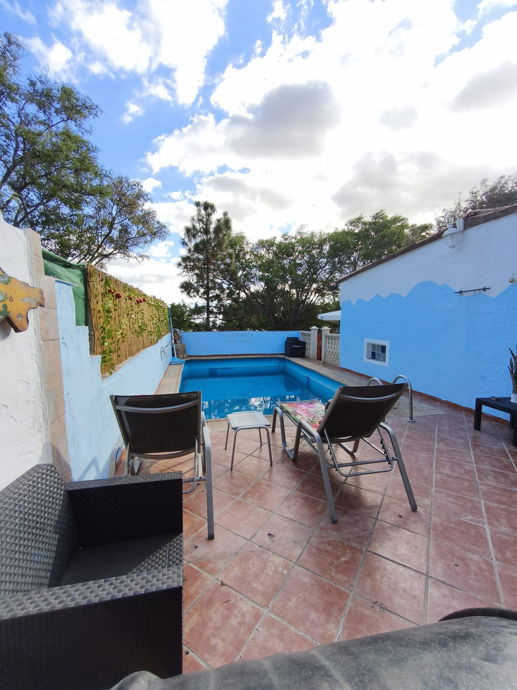
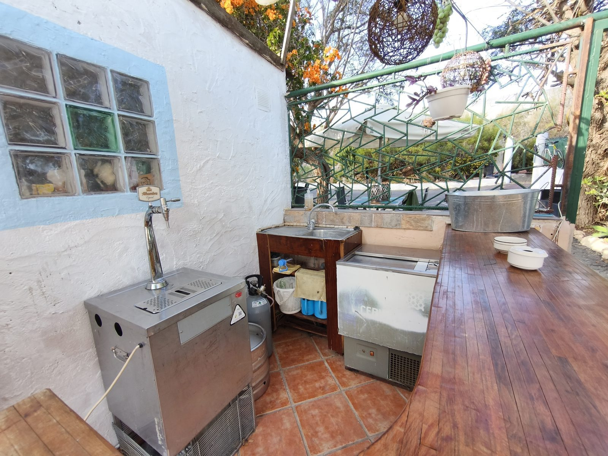
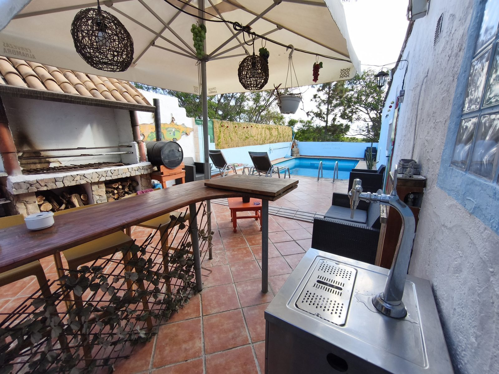
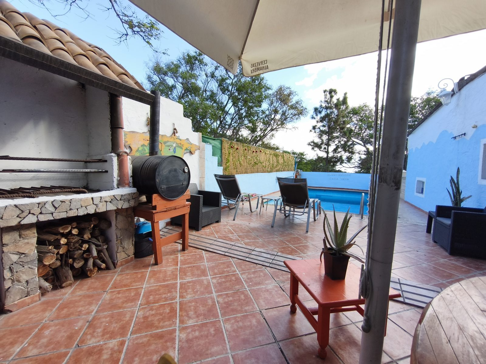
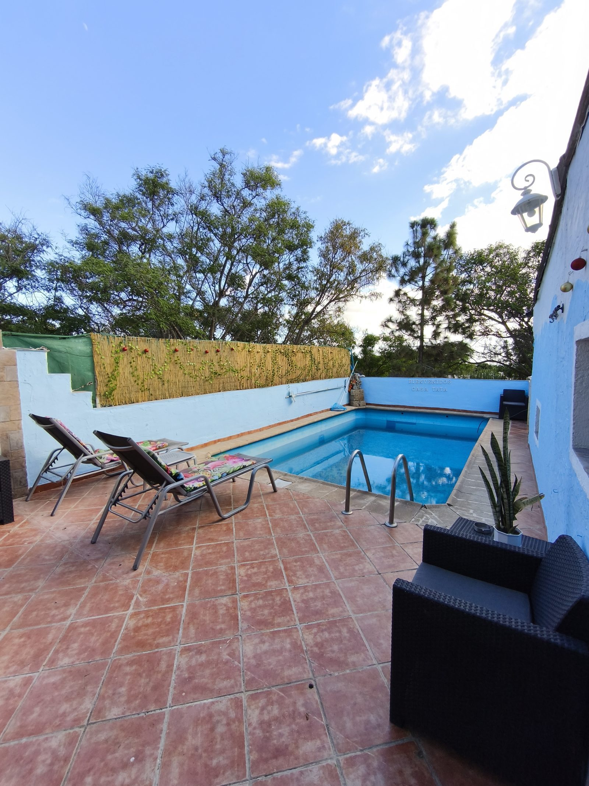
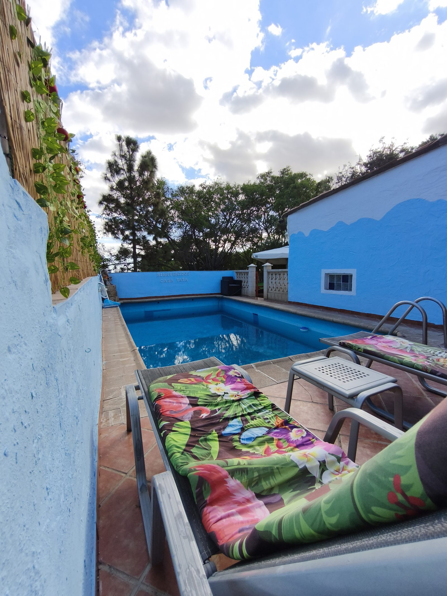

El Medano e' la capitale del surf e del windsurf di Tenerife: vento costante, onde perfette, atmosfera libera e una community internazionale di rider che si ritrova ogni giorno in spiaggia. Questa surf house ha l'anima giusta per chi vive il surf come uno stile di vita, non come una vacanza.
Carattere autentico, spazi condivisi conviviali, giardino per stendere la muta e fare colazione all'aperto, e un deposito attrezzato per le tavole. Budget-friendly senza compromessi sul cuore del progetto: stare bene, surfare tanto, conoscere gente.
Un luogo di incontro per surfer da tutto il mondo. L'atmosfera informale e i prezzi accessibili lo rendono un punto di riferimento per chi trascorre settimane o mesi a El Medano.






La scelta dei veri surfer: meno fronzoli, piu' onde. Un ambiente autentico dove il budget non e' un limite e lo stile di vita e' tutto.
Contattaci per disponibilita' e prezzi
💬 Contattaci su WhatsApp